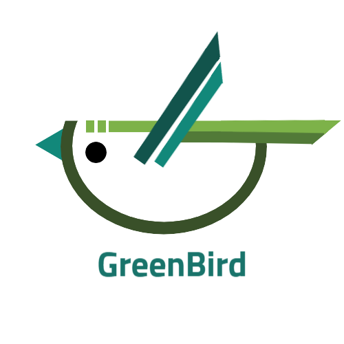

사이트 소개
조류 생태계 변화
기후변화 생물지표종
보호방안
GreenBird는?
기후위기에 따른 조류 생태계의 변화 양상을 분석하여 제시함으로써 현재 지구가
처한 상황의 심각성을 알리기 위해 자율교육과정의 일환으로 제작된 환경 사이트이다.
자연을 상징하는 색인 초록색(Green)과 새를 뜻하는 버드(Bird)를 합쳐
그린버드(GreenBird)라는 이름이 탄생하였다.
로고는 초록색 새의 형상으로, 둥근 부분은 우리가 살고 있는 지구를 상징하고,
눈 위의 끊어진 부분은 무분별한 개발을 일시정지하여야 한다는 뜻을 담고 있다.